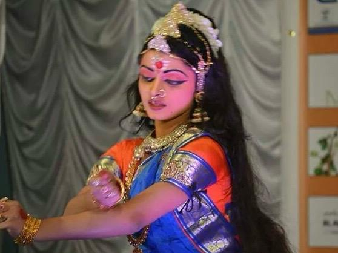
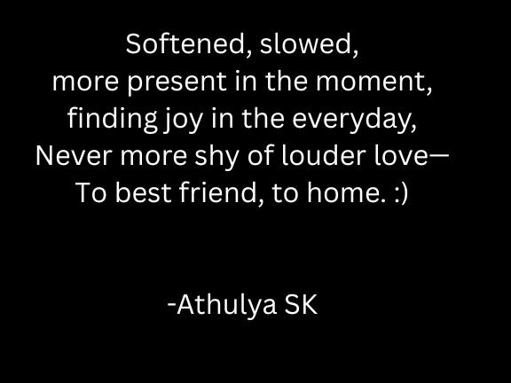
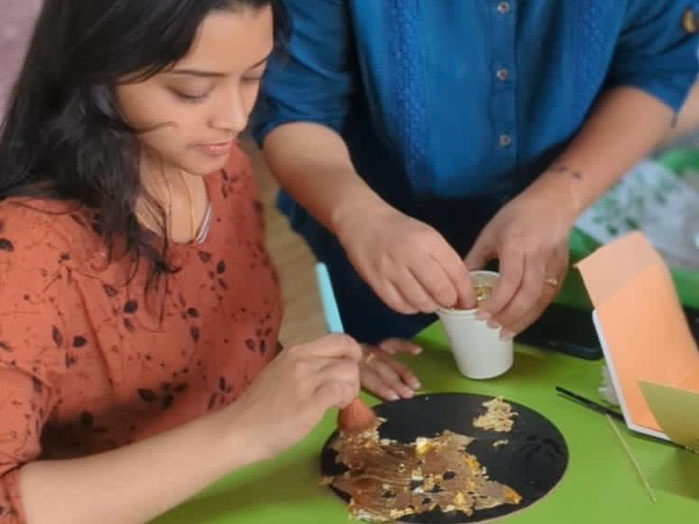
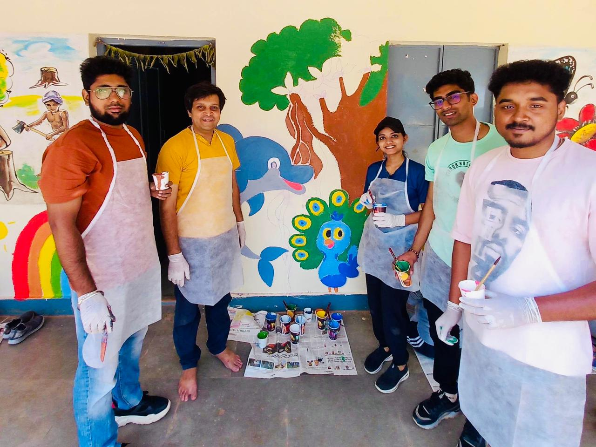

Hobbies & Passions
I find everyday joy and balance through creative and mindful pursuits.

Bharatanatyam
A classical dance form that connects me to rhythm, grace, and divinity. I’ve been learning and performing Bharatanatyam since childhood — and have recently returned to it with renewed devotion.

Poetry
I often turn to poetry to express emotions that words alone can’t contain — healing, reflection, and hope. I have shared my poems on a dedicated Instagram page.
Reading
From murder thrillers to heart-racing adventures, books are my window into the human experience and the art of storytelling.

Arts & Crafts
I love hands-on creative projects — glass painting, stitching, gold leaf art, and more. These crafts are my way of slowing down, exploring texture and color, and making small things with care.

Volunteering
I enjoy participating in community events and volunteering opportunities — each experience teaches humility, gratitude, and connection.